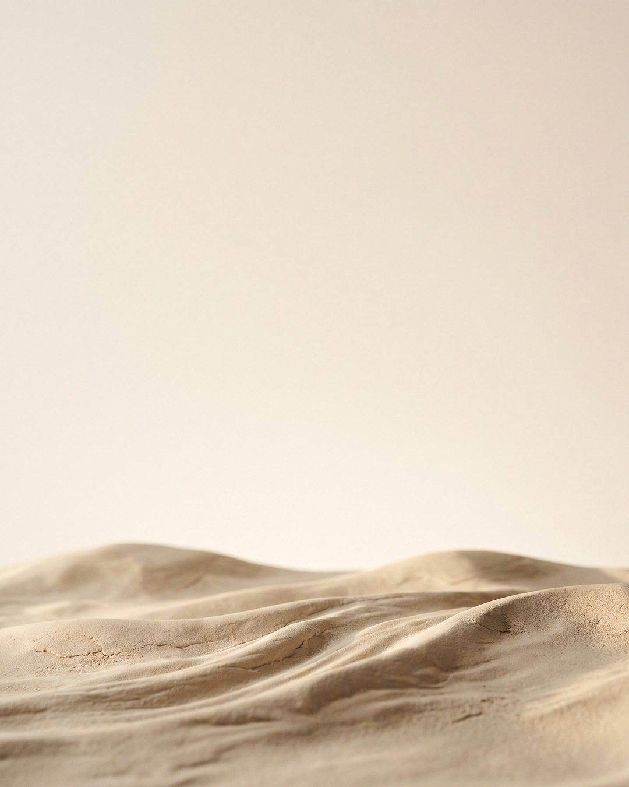
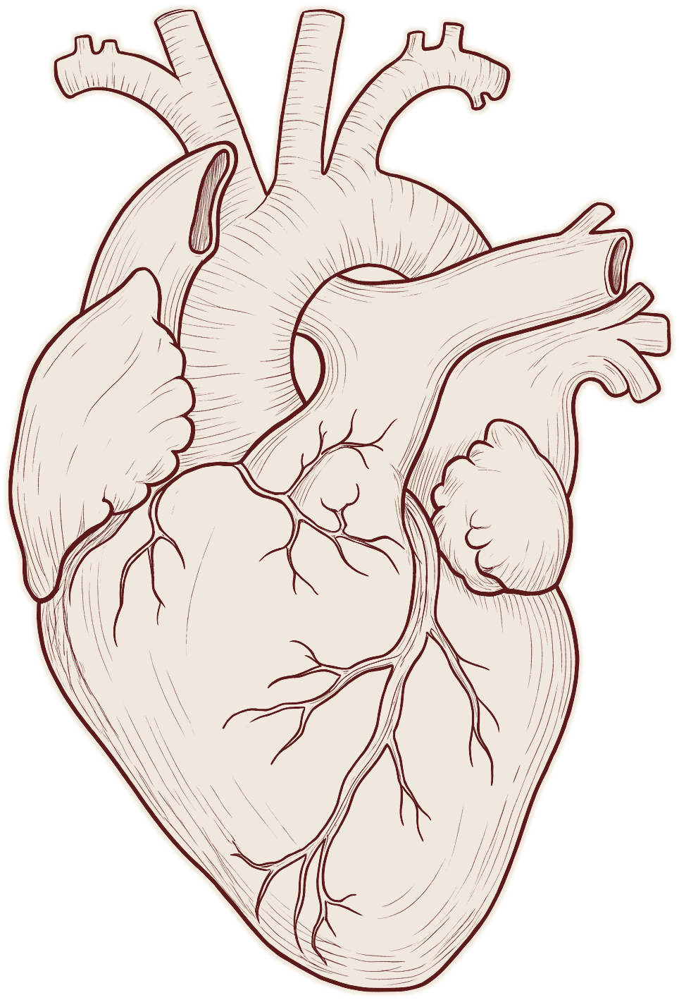
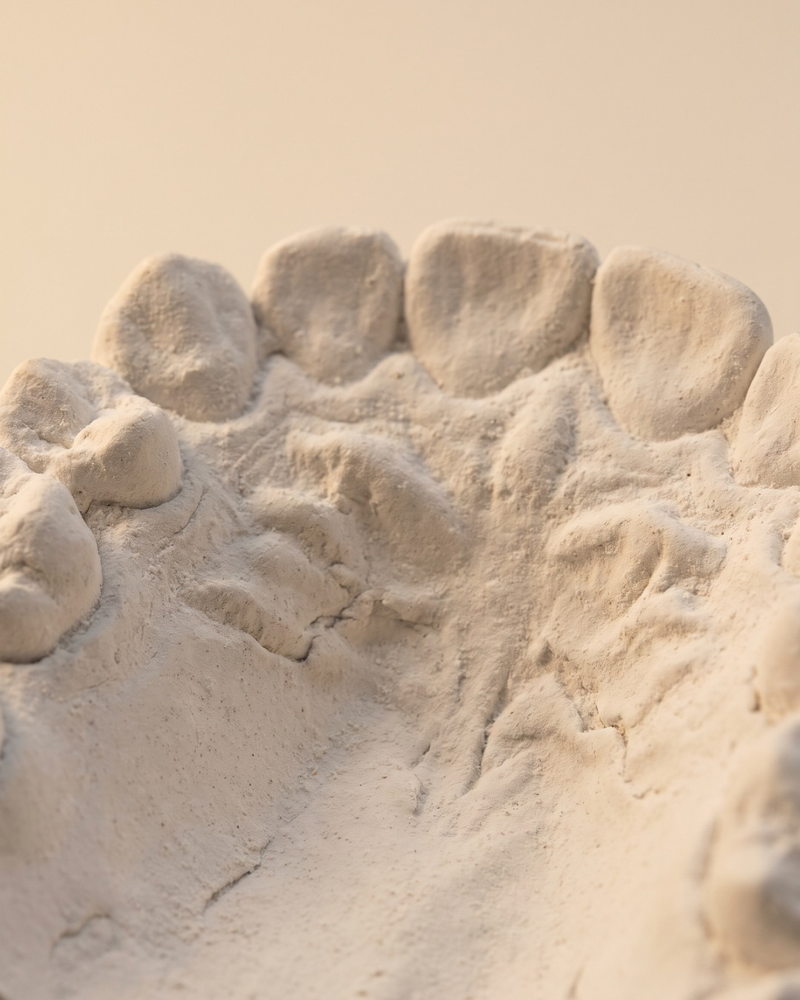

Prvo jedna sitnica. Pa još jedna. Vremenom prestanemo da primećujemo koliko se prilagođavamo – i problem postane svakodnevica.

Strah
Poznata nelagodnost deluje sigurnije od nepoznate promene.
Zato odlažemo. Ne odjednom, već sitnicu po sitnicu – baš kao što se i problem stvorio.
Čega se zapravo plašimo?
Kratkog bola? Ili istine da smo godinama birali da ne uradimo ništa?
Iz straha od bola koji možda nikada neće biti onakav kakvim ga zamišljamo, pristajemo na onaj koji već osećamo.
Perspektiva
1
Da imamo samo jedan zub, čuvali bismo ga kao srce.

Kad ih imamo mnogo, gubitak jednog deluje podnošljivo – dok ne primetimo koliko nam nedostaje. Ne samo u osmehu, već u svim malim trenucima u kojima više nismo opušteni.
Preokret
Ono što danas skrivamo, sutra više ne primećujemo.
Osmeh ponovo postane spontan. A promena od koje smo zazirali postane ona za koju nam je žao što je nismo napravili ranije.
Najbolji dan bio je juče. Drugi najbolji je danas.
Vreme će proći svakako. Pitanje je samo da li ćemo ga provesti prilagođavajući se problemu – ili krenuti ka rešenju.

Laboratorija Olujić
Neke promene ne vraćaju samo osmeh.
Vraćaju slobodu da o njemu više ne razmišljamo.
Ako ste dugo odlagali – pišite mi. Zajedno ćemo pronaći rešenje.